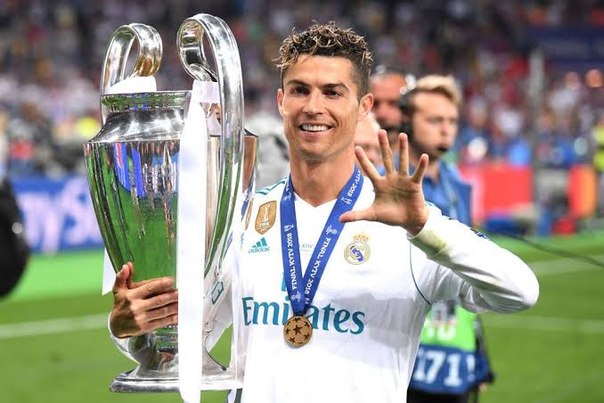
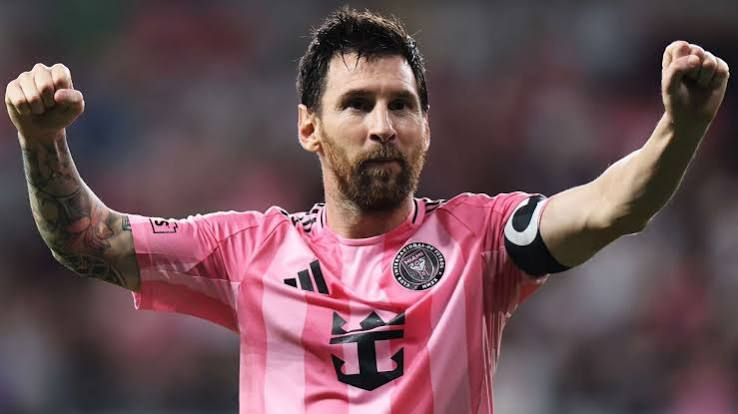

La propiedad de los equipos más famosos del fútbol mundial se divide en dos modelos: los clubes que pertenecen a sus propios aficionados y los que son controlados por fortunas privadas o gobiernos. Por un lado, históricos como el Real Madrid, el FC Barcelona y el Bayern Múnich pertenecen a sus socios (sus hinchas), quienes eligen democráticamente a sus directivas mediante votación. Por otro lado, grandes potencias financieras como el Manchester City (Abu Dabi), el Paris Saint-Germain (Qatar) y el Newcastle United (Arabia Saudita) son propiedad de fondos soberanos y jeques de Oriente Medio. Finalmente, el capital estadounidense domina clubes icónicos de la Premier League inglesa, como el Liverpool, Arsenal, Chelsea y Manchester United, los cuales pertenecen a multimillonarios y consorcios de los Estados Unidos que gestionan el deporte como una franquicia de entretenimiento global.


| Jugador | Goles |
| Messi | 800+ |
| Cristiano | 800+ |